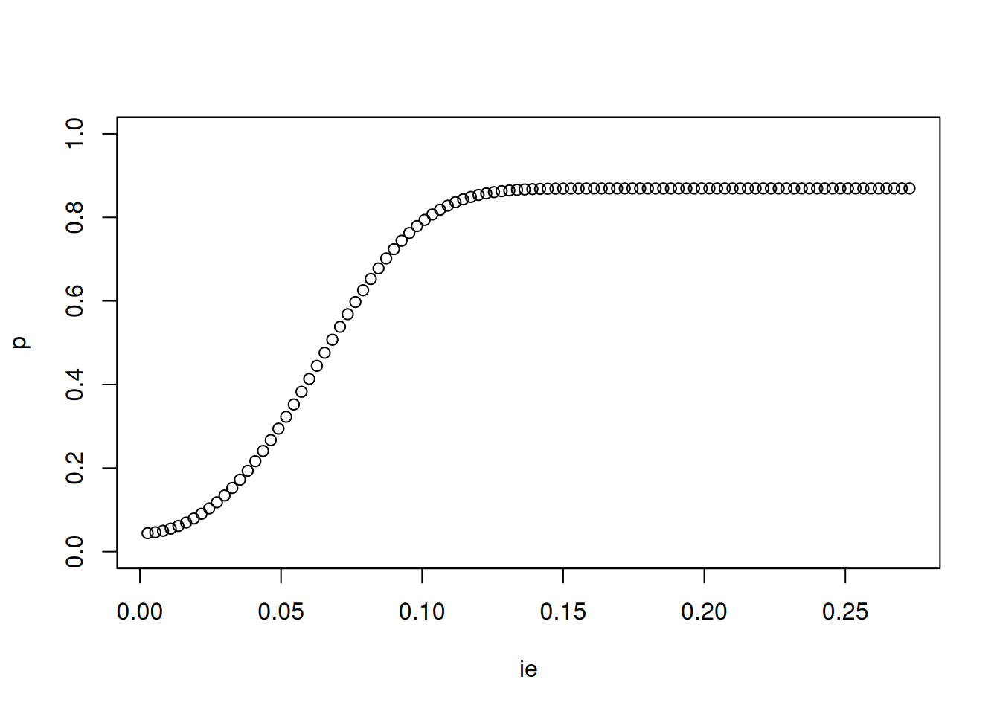

p<-c()
ie=c()
for (b in seq(1:100)/110) {
mod<-pamlj::pamlmed(aim="power",a=.3,b=b,sensitivity_coef = "b")
p[[length(p)+1]]<-mod$powertab$asDF$power
ie[[length(ie)+1]]<-mod$powertab$asDF$es
}Sensitivity analysis
Aim
The idea was to allow computing the minimal detectable indirect effect for any feasible mediation model. Given that the indirect effect results from multiplication of the component coefficients, the search for all possible combinations of coefficients value would quickly become intractable when the indirect effect is composed by many components, and it is already complex with two components.
Solutions
The solution to simplify the problem is to select one coefficient involved in the indirect effect and resize it until the required power, given a sample size, is found. The algorithm resizes the selected coefficient — keeping every other coefficient at its specified value — until the power of the indirect effect(s) that travel through that coefficient reaches the desired level. When the coefficient lies on more than one indirect path (a shared edge), the search drives the weakest of those effects to the target, so that every affected effect reaches at least the requested power. Effects that do not pass through the coefficient are left unchanged.
The balanced solution
Resizing a single coefficient cannot always reach the requested power. The power of an indirect effect, seen as a function of one of its coefficients, is unimodal: it rises, reaches a peak, then falls back as the coefficient approaches 1 (the mediator becomes collinear with its predictor and the other coefficients’ standard errors explode). The other coefficients on the path therefore cap the achievable power: if the requested power sits above that peak, no value of the single coefficient can deliver it. To give an example, a simple mediation model with \(a=.3\) and \(N=100\) cannot reach power of .90, because \(b=.30\) caps the maximum value to .86.
plot(ie,p,ylim=c(0,1))
When this happens, pamlj switches to a balanced solution: instead of moving one coefficient, it grows all the coefficients of the path together to a common value, which removes the bottleneck and can reach any power below 1. A message explains what happened, and the solution is recognizable in the table because the a and b columns of an affected effect become equal (every edge on the path is set to the same value):
PAMLj
Pamlj implements the algorithm (see the online help). First, install the dev version with the new algorithm
if (!require("pamlj"))
remotes::install_github("pamlj/pamlj",ref="Version.1.1.0")
## let's use the syntax interface (see package vignettes)
models<-"m~.3*x
y~.3*b*m+0.01*x
test=b"
results<-pamlj::pamlmed(aim="es",mode="medmodels",
code=models,
power=.80,
n=100,
inspect_cors=TRUE,
diagram = FALSE)results$powertab
Power Analysis Results
──────────────────────────────────────────────────────────────────────────────────────────────────────
Effect N X->M (a) M->Y (b) X->Y (c) Effect size Power α
──────────────────────────────────────────────────────────────────────────────────────────────────────
x → m → y 100 0.3000000 0.3400584 0.01000000 0.1020175 0.8000036 0.05000000
────────────────────────────────────────────────────────────────────────────────────────────────────── results$powerbyes
Power by Effect Size
───────────────────────────────────────────────────────────────────────────────────────────
Power to detect Description Indirect effect Coefficient (varied)
───────────────────────────────────────────────────────────────────────────────────────────
≤50% Likely miss 0 < ME ≤ 0.067 0 < b ≤ 0.225
50% – 80% Good chance of missing 0.067 < ME ≤ 0.102 0.225 < b ≤ 0.340
80% – 95% Probably detect 0.102 < ME ≤ 0.221 0.340 < b ≤ 0.738
≥95% Almost surely detect ME > 0.221 b > 0.738
───────────────────────────────────────────────────────────────────────────────────────────
Note. Estimated for N=100results$implied_cors
Model-implied correlations
────────────────────────────────────────────
x m y
────────────────────────────────────────────
x 1.0000000 0.3000000 0.1000000
m 0.3000000 1.0000000 0.3030000
y 0.1000000 0.3030000 1.0000000
──────────────────────────────────────────── In this example, given \(N=100\) poer of .80, the MDE is .102, corresponding to beta coefficients \(a=.3\) and \(b=.34\), which means \(cor(y,m)=.10\).
A more comple example:
models<-"m1~.3*x+.5*z
m2~.3*x+.4*z
y~.3*b*m1+0.01*x+.3*m2+.2*z
test=b"
results<-pamlj::pamlmed(aim="es",mode="medmodels",
code=models,
power=.80,
n=100,
inspect_cors=TRUE,
diagram = FALSE)results$powertab
Power Analysis Results
───────────────────────────────────────────────────────────────────────────────────────────────────────
Effect N X->M (a) M->Y (b) X->Y (c) Effect size Power α
───────────────────────────────────────────────────────────────────────────────────────────────────────
x → m1 → y 100 0.3000000 0.2974858 0.01000000 0.08924573 0.7999998 0.05000000
x → m2 → y 100 0.3000000 0.3000000 0.01000000 0.09000000 0.8205665 0.05000000
z → m1 → y 100 0.5000000 0.2974858 0.20000000 0.14874288 0.8424612 0.05000000
z → m2 → y 100 0.4000000 0.3000000 0.20000000 0.12000000 0.8852206 0.05000000
─────────────────────────────────────────────────────────────────────────────────────────────────────── results$powerbyes
Power by Effect Size
───────────────────────────────────────────────────────────────────────────────────────────
Power to detect Description Indirect effect Coefficient (varied)
───────────────────────────────────────────────────────────────────────────────────────────
≤50% Likely miss 0 < ME ≤ 0.065 0 < b ≤ 0.215
50% – 80% Good chance of missing 0.065 < ME ≤ 0.089 0.215 < b ≤ 0.297
80% – 95% Probably detect 0.089 < ME ≤ 0.183 0.297 < b ≤ 0.609
≥95% Almost surely detect ME > 0.183 b > 0.609
───────────────────────────────────────────────────────────────────────────────────────────
Note. Estimated for N=100results$implied_cors
Model-implied correlations
───────────────────────────────────────────────────────────────────────
x z m1 m2 y
───────────────────────────────────────────────────────────────────────
x 1.0000000 0.0000000 0.3000000 0.3000000 0.1900000
z 0.0000000 1.0000000 0.5000000 0.4000000 0.4700000
m1 0.3000000 0.5000000 1.0000000 0.2900000 0.4900000
m2 0.3000000 0.4000000 0.2900000 1.0000000 0.4700000
y 0.1900000 0.4700000 0.4900000 0.4700000 1.0000000
─────────────────────────────────────────────────────────────────────── Balanced solution
In this example the balanced solution is used because the “change one - fix others” does not find a solution because we required the sensitivity analysis for power .90.
models<-"m~.3*x
y~.3*b*m+0.01*x
test=b"
results<-pamlj::pamlmed(aim="es",mode="medmodels",
code=models,
power=.90,
n=100,
inspect_cors=TRUE,
diagram = FALSE)results$powertab
Power Analysis Results
──────────────────────────────────────────────────────────────────────────────────────────────────────
Effect N X->M (a) M->Y (b) X->Y (c) Effect size Power α
──────────────────────────────────────────────────────────────────────────────────────────────────────
x → m → y 100 0.3000000 0.7380000 0.01000000 0.2214000 0.8692036 0.05000000
──────────────────────────────────────────────────────────────────────────────────────────────────────
Note. The desired power (0.9) cannot be reached at N = 100: for x → m → y, the largest
detectable effect (ME = 0.2214) yields a maximum power of 0.8692. Increase the sample size to
reach the desired power.results$powerbyes
Power by Effect Size
───────────────────────────────────────────────────────────────────────────────────────────
Power to detect Description Indirect effect Coefficient (varied)
───────────────────────────────────────────────────────────────────────────────────────────
≤50% Likely miss 0 < ME ≤ 0.067 0 < b ≤ 0.225
50% – 80% Good chance of missing 0.067 < ME ≤ 0.102 0.225 < b ≤ 0.340
80% – 95% Probably detect 0.102 < ME ≤ 0.221 0.340 < b ≤ 0.738
≥95% Almost surely detect ME > 0.221 b > 0.738
───────────────────────────────────────────────────────────────────────────────────────────
Note. Estimated for N=100results$implied_cors
Model-implied correlations
────────────────────────────────────────────
x m y
────────────────────────────────────────────
x 1.0000000 0.3000000 0.1000000
m 0.3000000 1.0000000 0.3030000
y 0.1000000 0.3030000 1.0000000
────────────────────────────────────────────